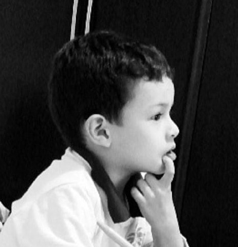

Eduardo Rodrigues Silva
Olá! Meu nome é Eduardo Rodrigues Silva, tenho 15 anos e atualmente estou estudando no 1° ano do Ensino Médio na Germinare Tech.
Minha história
Antes de entrar na Germinare, tive que passar por um processo seletivo que durou quase 5 meses. Não foi fácil, sempre ficava com aquele sentimento de cobrança, ansiedade, só queria que aquilo acabasse logo e que eu fosse aceito.O que mais me motivou a continuar foi minha vontade de ter um futuro próspero e, principalmente, o apoio dos meus pais, minha vó, minha tia e toda minha família (e eu agradeço muito por isso).
Foi só depois daquela entrevista que eu consegui ficar calmo, as respostas dos meus pais foram as mesmas que as minhas, e isso era algo muito bom, e tudo que restou foi só esperar pelo resultado.
No dia que saiu o resultado, meu coração quase saiu pela boca, minha mãe, que estava do meu lado, começou a chorar assim que eu disse a palavra "aprovado", meu pai estava chegando do trabalho e também estava ansioso (mais ansioso que minha mãe). Eles ficaram muito felizes e sempre acreditaram em mim, e aquela ansiedade finalmente passou.
A escola
Nos primeiros dias a escola parecia outro mundo, várias pessoas para lá e para cá, alunos, professores, funcionários e até empresários, 1000x diferente da minha escola antiga, que nem os diretores você conseguia ver.Os professores são prestativos, a escola é muito rígida com suas regras, os valores importam mais que suas notas e a comida é boa :)
Conheci muitas pessoais legais, fiz amigos e estou indo relativamente bem tanto nas matérias quanto nos valores, espero continuar assim e, com muita determinação e coragem, vou conseguir passar para o 2° ano.
A criação desse site
Foi um trabalho que o professor passou, e esse site tem o objetivo de treinarmos e mostrarmos nosso conhecimento sobre HTML5.Eu gostei de fazer esse site porque eu tive a liberdade de escolher os filmes / séries, decidir o design, cores e etc, mas também foi trabalhoso porque eu tive que mexer com 14 arquivos HTML (HyperText Markup Language) e 4 arquivos CSS (Cascading Style Sheets).
Conclusão
Muito obrigado por ter lido! Caso queira conversar comigo no particular vou deixar meus contatos no final do site.Também criei uma página no straw.page para colocar algumas coisas que eu gosto e mostrar um lado mais descontraído, visita lá!